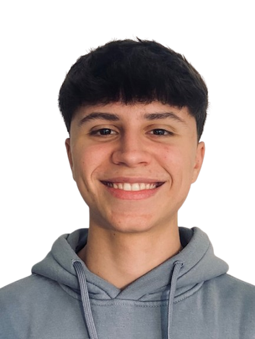

Soy Curro, estudiante de primer curso de DAM en Antequera, apasionado por aprender a programar y la mente maestra detrás de los circuitos de neón y las mecánicas de supervivencia táctica de NeoNBrawL. Mi misión es fusionar la estética retro-futurista con la tecnología moderna de HTML5 para crear arenas donde cada milisegundo cuenta.
En NeoNBrawL, no solo se programa un juego; se diseña una experiencia de resistencia terminal. Cada línea de código está siendo optimizada para la adrenalina, asegurando que el combate sea fluido, vibrante e implacable durante mi proceso de aprendizaje. Puedes ver más sobre mis proyectos en mi Portfolio Personal.
ARQUITECTURA DE ARENAS
SOBREVIVIENDO AL CÓDIGO